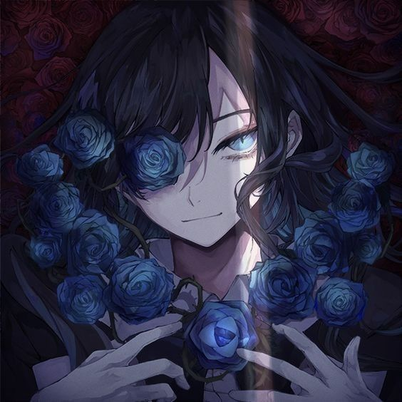

💠La Sombra que Canta💠 |
|---|
¿Quien es Ado?
Ado es una cantante japonesa nacida el 24 de octubre de 2002 que ha revolucionado la industria musical sin necesidad de mostrar su rostro. Comenzó su carrera a los 14 años como "Utaite", un término japonés para referirse a personas que suben covers de canciones (especialmente de Vocaloid) a plataformas como Niconico o YouTube.
El fenómeno "Usseewa" (2020): Debutó profesionalmente a los 17 años con este sencillo. La canción, cargada de una crítica feroz a las expectativas sociales de Japón, se convirtió en un himno para la juventud y acumuló cientos de millones de reproducciones en tiempo récord.
